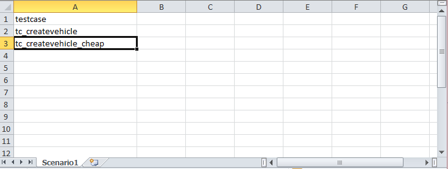
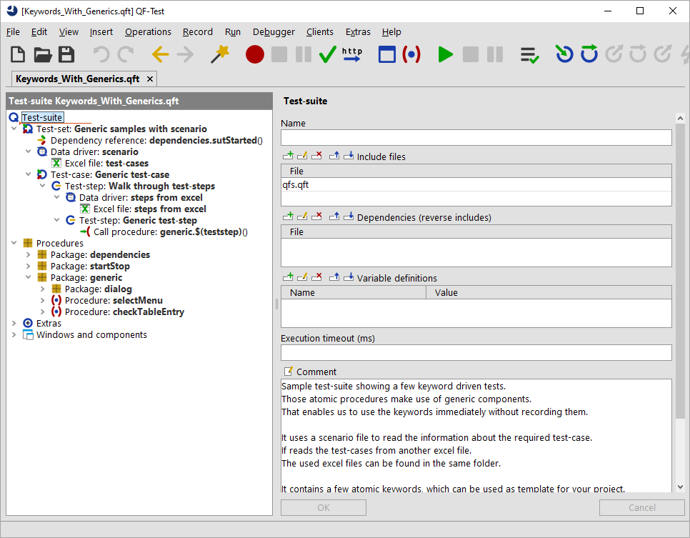

| Version 6.0.3 |
Apart from defining single test-cases you can also specify the entire test scenario in Excel files or even within your test management tool.
In our sample we will go on using Excel to keep things simple.
Of course it's also possible to use your testmanagement tool there.
For reasons of simplification we have used Excel files again. You can find a sample test-suite at
qftest-6.0.3/demo/keywords/generic_with_scenario/
Keywords_With_Generics.qft.
The scenario itself can be found in qftest-6.0.3/demo/keywords/generic_with_scenario/
scenario.xlsx.
All used test-cases are described in a separate excel file, see
qftest-6.0.3/demo/keywords/generic_with_scenario/
keywords-generic-testcases.xlsx.
Please take care to copy the demo folder to a project-related folder first and modify them there.
The provided scenario consists of two test-cases using the concept of generic procedures and components (see section 28.3). You can use any other approach, if you want.
Let's take a look at the scenario Excel file.
|
|  | ||
|
| Figure 28.8: Excel file as scenario file | ||
The worksheet "Scenario" contains a column "testcase". This value will be used as variable later. Each subsequent row represents a test-case name.
Those test-cases correspond with the worksheets in keywords-generic-testcases.xlsx.
The worksheets "tc_createvehicle" and "tc_createvehicle_cheap" contain the respective test-case description.
How does the test-suite look like?
|
|  | ||
|
| Figure 28.9: Test-suite scenario file | ||
|
|
|
||||||||||||||||||||||||
|
| Table 28.6: Structure of Keywords_With_Generics.qft | ||||||||||||||||||||||||
| Last update: 9/6/2022 Copyright © 1999-2022 Quality First Software GmbH |